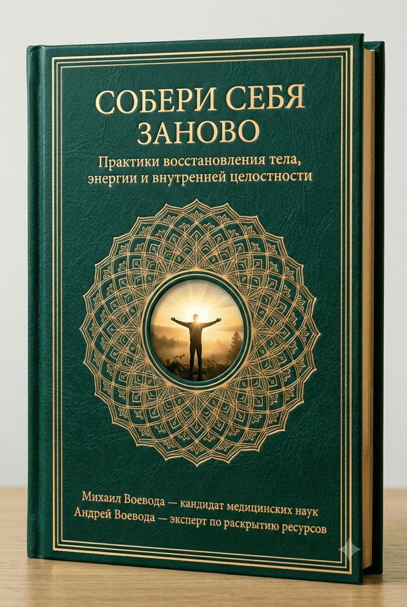

Усталость и увядание — это не возраст. Это блокировка. Львиная доля ваших жизненных сил уходит на скрытую внутреннюю оборону и удержание хронического напряжения. Узнайте, как снять эту блокировку без изнуряющего спорта, жестких диет и горстей таблеток.
«Мы лечим не то, что болит»: почему бесполезно глушить усталость кофе, пить наугад витамины и мазать ноющую спину, когда настоящая причина упадка сил — в глубоких мышечных зажимах, спазме сосудов и перегрузке внутренних органов от скрытого стресса.
Физиология обычной тарелки и тишина ума: как простое изменение очередности блюд за обедом и короткие дыхательные протоколы перед сном меняют уровень бодрости, работу сосудов и глубину ночного восстановления.
Возвращение природного ресурса: как за 5–15 минут в день мягко снять телесную скованность и перевести нервную систему из режима хронического «выживания» в состояние спокойной силы.
Михаил Воевода — к.м.н., доцент кафедры хирургии, сосудистый хирург (30 лет у операционного стола), прямой ученик Гранд Мастера кунг-фу Ли Хонг Тая.
Андрей Воевода — соавтор системы, исследователь нейробиологии привычек, дыхательных практик и системного восстановления организма.
PDF-формат (117 стр.) • Мгновенный доступ после оплаты

PDF-формат (117 стр.) • Мгновенный доступ
Представьте автомобиль, у которого водитель вдавил педаль газа в пол, но забыл опустить ручной тормоз. Двигатель ревёт на пределе, бензин сгорает литрами, колодки дымятся — а машина еле ползёт вперёд.
Наше тело не умеет отличать реальную физическую угрозу от вашей тревожной мысли, финансового дедлайна или невысказанной обиды. В ответ на фоновый стресс мозг переводит организм в режим «скрытой осады»:
Как распределяется ваш ресурс в режиме хронического стресса (по ощущениям тела):
Отметьте состояния, которые вы замечали у себя за последний месяц:
Самопроверка состояния
Отметьте хотя бы один пункт выше — и вы увидите, почему обычные советы «просто выспаться» не дают результата.
«Когда стоишь у операционного стола три десятилетия, видишь человеческий организм без прикрас. Видишь, как спазмируются и теряют эластичность сосуды, как страдают от застоя ткани и органы, как гаснет жизненная сила даже у совсем не старых людей.
Но самое главное открытие пришло со временем: здоровье человека не начинается в операционной и не заканчивается рецептом на таблетки. Таблетка утром и капли вечером часто лишь приглушают сигнальную лампочку на приборной панели, пока образ жизни и внутренний спазм продолжают подпитывать корень проблемы.
Мы привыкли разбирать следствия по отдельности — отдельно шею, отдельно пищеварение, отдельно тонус сосудов, отдельно бессонницу. Но человек — это единая живая система, где хроническая тревога мгновенно отражается на дыхании, биохимии крови и тонусе сосудистой стенки».
Именно поэтому кандидат медицинских наук, доцент кафедры хирургии Михаил Воевода объединил академические знания сосудистой физиологии с многолетним опытом обучения у Гранд Мастера традиционного ушу и цигун Ли Хонг Тая. Вместе с соавтором и исследователем системного оздоровления Андреем Воеводой они более 12 лет проверяли и выстраивали на собственном опыте целостную методику на стыке западной физиологии и восточной культуры движения, дыхания и внимания.
Никаких экстремальных нагрузок или сомнительных экспериментов. Каждое движение, дыхательный цикл и пищевая привычка объяснены с точки зрения анатомии сосудов, биомеханики позвоночника и физиологии нервной системы.
В книгу вошли тонкие биомеханические и дыхательные нюансы восточной школы, которые редко объясняют в открытых видеороликах, где часто копируют лишь внешнюю форму движения без понимания внутренней работы тела.
Книга соединяет в единый пазл управление вниманием и стрессом, культуру питания и питьевого режима, заботу о сосудах и пищеварении, дыхание и более 30 практических упражнений с пошаговыми иллюстрациями.
Почему длительное эмоциональное напряжение по-разному отражается на самочувствии мужчин и женщин? Вы узнаете, как спазм гладкой мускулатуры и крошечного сфинктера нарушает нормальный отток желчи, и почему без снятия этого зажима любые диеты работают вполсилы.
Когда в момент тревоги мы начинаем часто и поверхностно дышать, срабатывает физиологический эффект Вериго — Бора: мы избыточно вымываем углекислый газ. Без его нормального уровня сосуды мозга рефлекторно сужаются, а гемоглобин хуже отдает кислород клеткам.
То, что восточные мастера веками описывали как «меридианы», во многом перекликается с современной анатомией миофасциальных цепей. От гиподинамии и стресса фасции теряют эластичность и скольжение, буквально стягивая тело, словно тесный скафандр.
Два человека могут съесть одинаковый обед, но первый почувствует вялость и тяжесть, а второй — ровный прилив сил. Огромную роль играет не только состав блюд, но и температура воды, спокойное состояние перед едой и правильная последовательность продуктов.
Как поддержать сердечно-сосудистую систему простыми натуральными продуктами в рационе? А также как с помощью мягкой саморегуляции снять хронические зажимы у основания черепа и шеи, возвращая лицу свежий вид и естественный тонус.
Попытки заставить себя «не думать» редко помогают, пока нервная система взвинчена дневной гонкой. Но через направленное внимание, расслабление мелких мышц лица и дыхание можно мягко активировать парасимпатическую систему, отвечающую за покой и сон.
Авторы делятся удивительным наблюдением на стыке психофизиологии и восточной традиции: когда родители находятся в хроническом напряжении, дети через систему зеркальных нейронов, мимику и тембр голоса мгновенно считывают эту тревогу, отвечая капризами и беспокойством. В книге раскрыты практики восстановления семейного и личного баланса: вечерний ритуал сброса накопленного за день напряжения, культура чайного созерцания и 4 ключа к теплому общению с ребенком от рождения до 18 лет.
PDF-формат (117 стр.) • Мгновенный доступ
Вам не нужно становиться монахом или проводить часы в спортзале. Система встраивается в ваш обычный день через короткие приятные ритуалы (от 5 минут прямо в постели). Переключите вкладки ниже и почувствуйте разницу:
Будильник вырывает из поверхностного сна. Рука по привычке сразу тянется к смартфону и новостям — в ту же секунду подскакивает уровень стресса, шея и поясница ноют от ночного зажима, а в голове туман, который не разогнать даже большой чашкой крепкого кофе.
Быстрый обед перед монитором вприкуску с рабочими чатами и фоновым напряжением. Вместо прилива сил — тяжелая сонливость уже через 30 минут: веки слипаются, концентрация падает, а остаток рабочего дня проходит на чистом усилии воли.
Стимуляторы и добавки наугад
Временная маскировка
Бессистемный прием добавок без налаженного сна, дыхания и снятия мышечных зажимов дает лишь кратковременный эффект, не обучая организм саморегуляции.
Разовый сеанс массажа
Краткий перерыв
Приятная внешняя помощь, но без ежедневных 5-минутных навыков снятия стресса привычный мышечный панцирь возвращается уже через несколько дней за компьютером.
КНИГА «СОБЕРИ СЕБЯ ЗАНОВО»
Навык на всю жизнь
Концентрат 30 лет врачебного опыта и восточной культуры здоровья. Понятная система ежедневных практик, которая остается в вашей семейной библиотеке навсегда.
PDF-формат (117 стр.) • Мгновенный доступ
🌍 Оплата картой любого банка, СБП
Сон перестал давать полноценную бодрость: вы просыпаетесь уставшим и чувствуете дефицит энергии уже в первой половине дня.
Тело словно заковано в панцирь: шея, плечи и спина постоянно затекают и каменеют от сидячей работы и информационной перегрузки.
Вы устали от противоречивых советов в интернете и ищете спокойный, выверенный подход без фанатизма и изнурительных тренировок.
Вам близка идея целостного подхода от практикующего врача, где внимание к сосудам, дыханию, питанию и внутреннему покою собрано в единую систему.
«Начала читать рукопись просто потому, что устала просыпаться среди ночи от внутреннего беспокойства. Написано очень понятно, теплым языком, без сухой академической заумности. Внедрила дыхательные упражнения и простые правила по еде — ушла привычная тяжесть после обеда. Засыпаю гораздо спокойнее, и по утрам голова свежая».
«Для меня решающим стало то, что Михаил — действующий сосудистый хирург, к.м.н. Когда врач на пальцах объясняет, как от стресса зажимаются мышцы и сосуды, и как правильное дыхание помогает снять этот спазм — в голове наконец складывается весь пазл. Утренняя скованность в шее и спине стала отпускать уже в первую неделю практики».
«Начали с мужем выполнять мягкую утреннюю разминку прямо в постели по иллюстрациям из книги. Утренняя разбитость сменилась приятным теплом в теле, ушла фоновая суета, появилось гораздо больше бодрости на весь день. Очень светлая и практичная книга».
Кнопка переводит вас на официальную международную платформу цифровых товаров Lava.top. Там вы можете одним кликом выбрать удобную валюту (RUB, USD, EUR) и безопасно оплатить книгу картой любого банка или через СБП.
Доступ открывается мгновенно после оплаты (плюс ссылка на файл автоматически дублируется на вашу электронную почту). Вы получаете полную иллюстрированную версию в универсальном формате PDF (117 страниц), которую удобно читать со смартфона, планшета или компьютера.
Да, книга создана практикующим хирургом, к.м.н. именно для бережного, физиологичного самовосстановления. Здесь нет изнуряющих тренировок, прыжков или сложных гимнастических поз — все базовые комплексы выполняются мягко, в комфортной амплитуде, начиная прямо с постели, буквально за 5–10 минут в день.
Организм обладает огромным потенциалом к саморегуляции — ему нужно лишь перестать мешать и дать бережную систему поддержки. Снимите накопленное напряжение, верните телу подвижность, а голове — спокойную ясность.
PDF-формат (117 стр.) • Мгновенный доступ
Безопасная оплата через платформу Lava.top • Нажимая кнопку, вы соглашаетесь с условиями публичной оферты и политикой конфиденциальности.
Настоящий документ является официальным предложением (публичной офертой) Авторов любому физическому лицу заключить договор купли-продажи цифрового товара (электронной книги) на условиях, изложенных ниже.
1. Предмет договора: Продавец обязуется предоставить Покупателю доступ к электронной книге «Собери себя заново» в цифровом формате PDF после подтверждения оплаты.
2. Порядок покупки и оплаты: Приём платежей и автоматическая цифровая доставка осуществляются через партнёрскую международную платформу Lava.top. Ссылка на скачивание направляется Покупателю автоматически на указанный при оплате адрес электронной почты.
Реквизиты продавца:
[ФИО ИЛИ НАЗВАНИЕ ИП / САМОЗАНЯТОГО]
ИНН: [ВАШ ИНН]
Электронная почта для связи: [ВАША ПОЧТА]
1. Общие положения: Настоящий сайт (https://avoevoda.com/) уважает право посетителей на неприкосновенность частной жизни и обрабатывает данные в соответствии с требованиями применимого законодательства (включая ФЗ № 152-ФЗ «О персональных данных»).
2. Сбор данных на сайте: На самом сайте avoevoda.com отсутствуют формы сбора имени, телефона или банковских реквизитов. Оформление заказа и ввод электронной почты для доставки книги происходят непосредственно на защищённой стороне платёжной платформы Lava.top в соответствии с её политикой конфиденциальности.
3. Файлы Cookie и веб-аналитика: Для улучшения работы сайта и анализа посещаемости используются файлы cookie и сервис веб-аналитики Яндекс.Метрика. Эти сервисы собирают технические данные о визите (тип браузера, время на сайте, просмотренные блоки). Вы можете в любой момент отключить сохранение файлов cookie в настройках своего браузера.